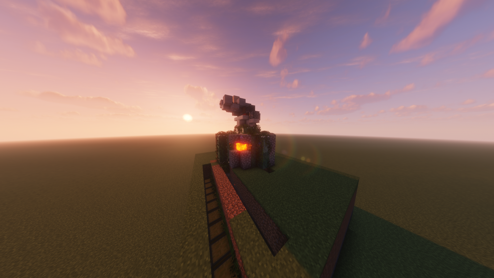

⛏️ Cobblestone Farm
Otomatik Cobblestone üretim sistemi

📦
Dosya Türü
.litematic
⚙️
Farm Türü
Cobblestone
🎮
Mod
Litematica
🪨
Ürün
Cobblestone
📖 Schematic Hakkında
Bu schematic otomatik Cobblestone üretmek için kullanılabilir. Litematica ile Minecraft dünyanıza kolayca yerleştirebilirsiniz.
🎮 Minecraft 1.21.4 uyumludur.
💬 Yorumlar